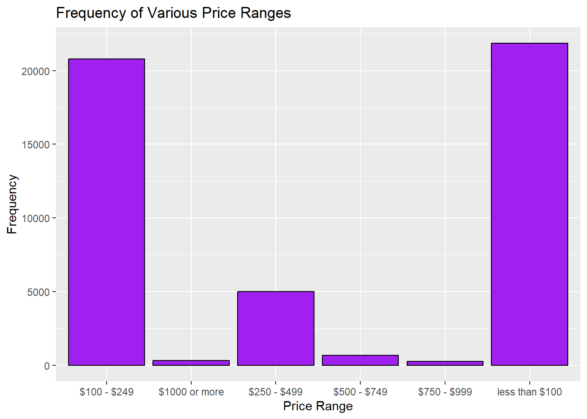
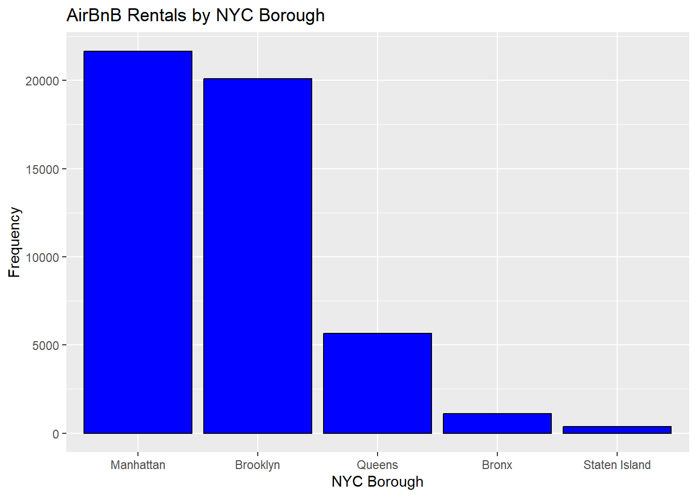
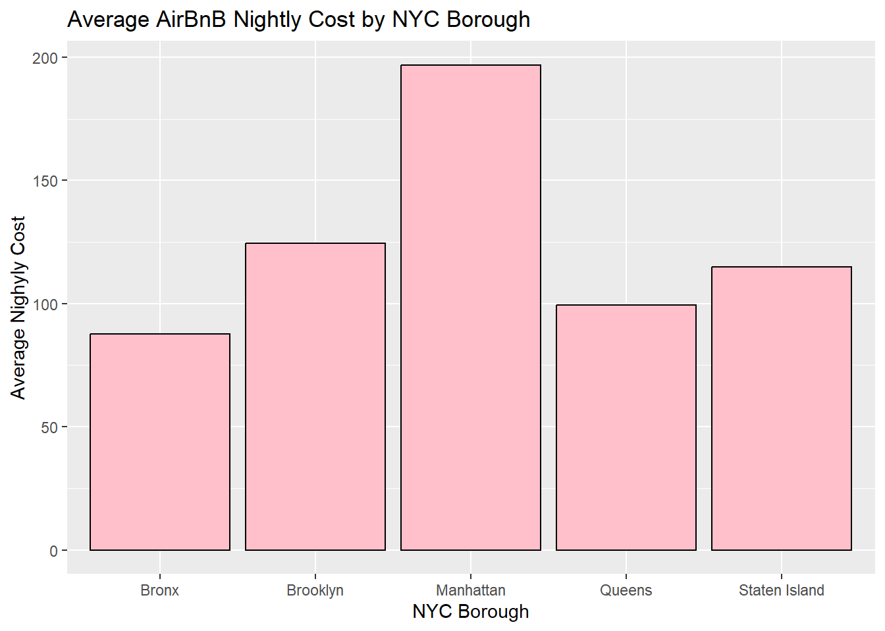
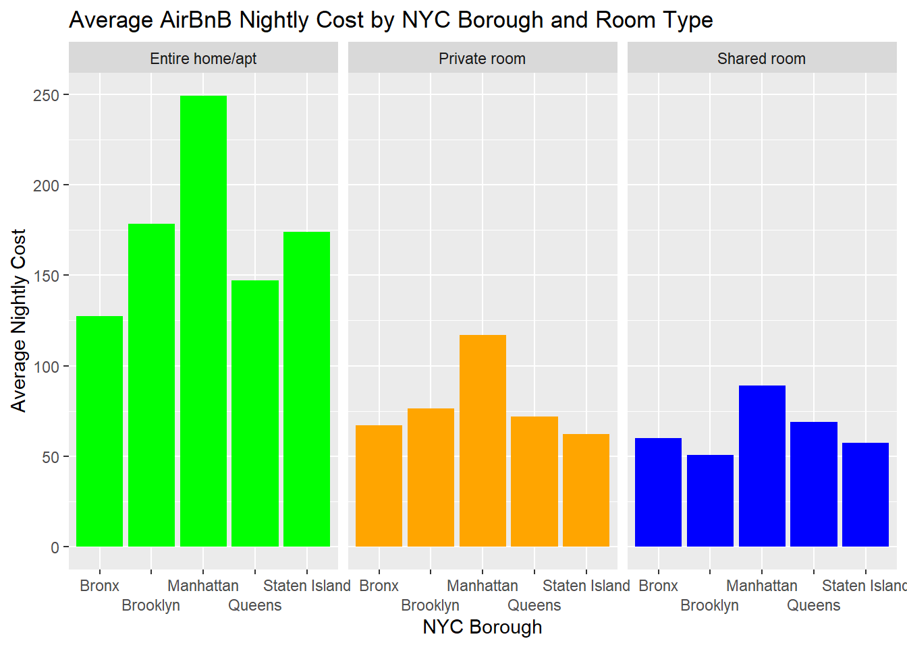
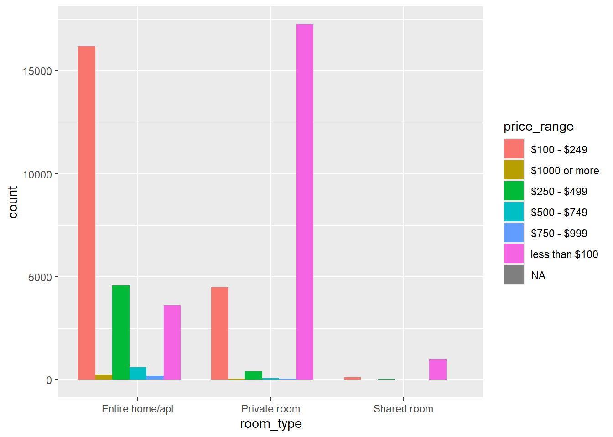

library(tidyverse)
library(summarytools)
library(dbplyr)
library(readr)
library(forcats)
knitr::opts_chunk$set(echo = TRUE)2019 AirBnB Rentals in NYC Boroughs
Read in and view summary of ‘AB_NYC_2019’ dataset
AB_NYC <- read_csv ("_data/AB_NYC_2019.csv")Rows: 48895 Columns: 16
── Column specification ────────────────────────────────────────────────────────
Delimiter: ","
chr (5): name, host_name, neighbourhood_group, neighbourhood, room_type
dbl (10): id, host_id, latitude, longitude, price, minimum_nights, number_o...
date (1): last_review
ℹ Use `spec()` to retrieve the full column specification for this data.
ℹ Specify the column types or set `show_col_types = FALSE` to quiet this message.head(AB_NYC)# A tibble: 6 × 16
id name host_id host_name neighbourhood_group neighbourhood latitude
<dbl> <chr> <dbl> <chr> <chr> <chr> <dbl>
1 2539 Clean & qu… 2787 John Brooklyn Kensington 40.6
2 2595 Skylit Mid… 2845 Jennifer Manhattan Midtown 40.8
3 3647 THE VILLAG… 4632 Elisabeth Manhattan Harlem 40.8
4 3831 Cozy Entir… 4869 LisaRoxa… Brooklyn Clinton Hill 40.7
5 5022 Entire Apt… 7192 Laura Manhattan East Harlem 40.8
6 5099 Large Cozy… 7322 Chris Manhattan Murray Hill 40.7
# ℹ 9 more variables: longitude <dbl>, room_type <chr>, price <dbl>,
# minimum_nights <dbl>, number_of_reviews <dbl>, last_review <date>,
# reviews_per_month <dbl>, calculated_host_listings_count <dbl>,
# availability_365 <dbl>Per the data frame summary, the price variable contains some $0’s; sort dataframe to review before recoding.
AB_NYC <- AB_NYC[order(AB_NYC$price),]Recode price=$0 to NA.
AB_NYC <- AB_NYC %>%
mutate_at(c("price"), ~ na_if(., 0))
AB_NYC <- AB_NYC[order(AB_NYC$price, na.last=FALSE),]Recode ‘price’ variable into new ‘price_range’ variable.
AB_NYC <- AB_NYC %>%
mutate(price_range = case_when(
price < 100 ~ "less than $100",
price >= 100 & price < 250 ~ "$100 - $249",
price >= 250 & price < 500 ~ "$250 - $499",
price >= 500 & price < 750 ~ "$500 - $749",
price >= 750 & price < 1000 ~ "$750 - $999",
price >= 1000 ~ "$1000 or more")
)
AB_NYC %>% count(price_range)# A tibble: 7 × 2
price_range n
<chr> <int>
1 $100 - $249 20792
2 $1000 or more 298
3 $250 - $499 4991
4 $500 - $749 682
5 $750 - $999 255
6 less than $100 21866
7 <NA> 11Determine the values associated with each price range category.
unique(AB_NYC$price_range) [1] NA "less than $100" "$100 - $249" "$250 - $499"
[5] "$500 - $749" "$750 - $999" "$1000 or more" Tried to specify the factor order but couldn’t get it to work…
AB_NYC<-AB_NYC%>%
mutate(price_range_ordered = factor(price,
levels = price_range[c(2,3,4,5,6)]))
AB_NYC %>%
filter (!is.na(price_range)) %>%
ggplot(aes(x=price_range)) +
geom_bar(position = "dodge",
stat = "count", fill="purple", colour="black")+
labs(title = "Frequency of Various Price Ranges", y = "Frequency", x = "Price Range")
Create ggplot of rentals by NYC Borough, order bars from highest to lowest value.
AB_NYC %>%
ggplot(aes(x=fct_infreq(neighbourhood_group))) +
geom_bar(stat = "count", fill="blue", colour="black")+
labs(title = "AirBnB Rentals by NYC Borough", y = "Frequency", x = "NYC Borough")
Create crosstab of neighbourhood by price_range.
xtabs(~ neighbourhood_group + price_range, AB_NYC) price_range
neighbourhood_group $100 - $249 $1000 or more $250 - $499 $500 - $749
Bronx 229 2 30 6
Brooklyn 7677 67 1244 158
Manhattan 11234 213 3486 498
Queens 1548 13 217 18
Staten Island 104 3 14 2
price_range
neighbourhood_group $750 - $999 less than $100
Bronx 1 822
Brooklyn 54 10895
Manhattan 194 6035
Queens 5 3865
Staten Island 1 249Calculate min/max/mean price (price) and group data by neighbourhood_group and room_type.
GrpByNeighborhoodRoom <- AB_NYC %>%
group_by(neighbourhood_group) %>%
summarise(minADR = min(price, na.rm = TRUE), maxADR = max(price, na.rm = TRUE), meanADR = mean(price, na.rm = TRUE))
head(GrpByNeighborhoodRoom)# A tibble: 5 × 4
neighbourhood_group minADR maxADR meanADR
<chr> <dbl> <dbl> <dbl>
1 Bronx 10 2500 87.6
2 Brooklyn 10 10000 124.
3 Manhattan 10 10000 197.
4 Queens 10 10000 99.5
5 Staten Island 13 5000 115. AB_NYC %>%
ggplot(aes(x=neighbourhood_group, y=price)) +
geom_bar(position = "dodge",fill="pink", colour="black",
stat = "summary",
fun = "mean")+
labs(title = "Average AirBnB Nightly Cost by NYC Borough", y = "Average Nighyly Cost", x = "NYC Borough")Warning: Removed 11 rows containing non-finite outside the scale range
(`stat_summary()`).
GrpByNeighborhoodRoom <- AB_NYC %>%
group_by(neighbourhood_group, room_type) %>%
summarise(minADR = min(price, na.rm = TRUE), maxADR = max(price, na.rm = TRUE), meanADR = mean(price, na.rm = TRUE)) `summarise()` has grouped output by 'neighbourhood_group'. You can override
using the `.groups` argument.head(GrpByNeighborhoodRoom)# A tibble: 6 × 5
# Groups: neighbourhood_group [2]
neighbourhood_group room_type minADR maxADR meanADR
<chr> <chr> <dbl> <dbl> <dbl>
1 Bronx Entire home/apt 28 1000 128.
2 Bronx Private room 10 2500 66.9
3 Bronx Shared room 20 800 59.8
4 Brooklyn Entire home/apt 10 10000 178.
5 Brooklyn Private room 10 7500 76.5
6 Brooklyn Shared room 15 725 50.8tail(GrpByNeighborhoodRoom)# A tibble: 6 × 5
# Groups: neighbourhood_group [2]
neighbourhood_group room_type minADR maxADR meanADR
<chr> <chr> <dbl> <dbl> <dbl>
1 Queens Entire home/apt 10 2600 147.
2 Queens Private room 10 10000 71.8
3 Queens Shared room 11 1800 69.0
4 Staten Island Entire home/apt 48 5000 174.
5 Staten Island Private room 20 300 62.3
6 Staten Island Shared room 13 150 57.4AB_NYC %>%
ggplot(aes(x=neighbourhood_group, y=price, fill=room_type)) +
geom_bar(position = "dodge",
stat = "summary",
fun = "mean")+
facet_wrap(vars(room_type), scales = "free_x") +
scale_fill_manual(values=c("green","orange","blue"))+
theme(legend.position="none")+
scale_x_discrete(guide = guide_axis(n.dodge=2))+
labs(title = "Average AirBnB Nightly Cost by NYC Borough and Room Type", y = "Average Nightly Cost", x = "NYC Borough")Warning: Removed 11 rows containing non-finite outside the scale range
(`stat_summary()`).
AB_NYC %>%
ggplot(aes(fill=price_range, x=room_type)) +
geom_bar(position="dodge", stat="count")